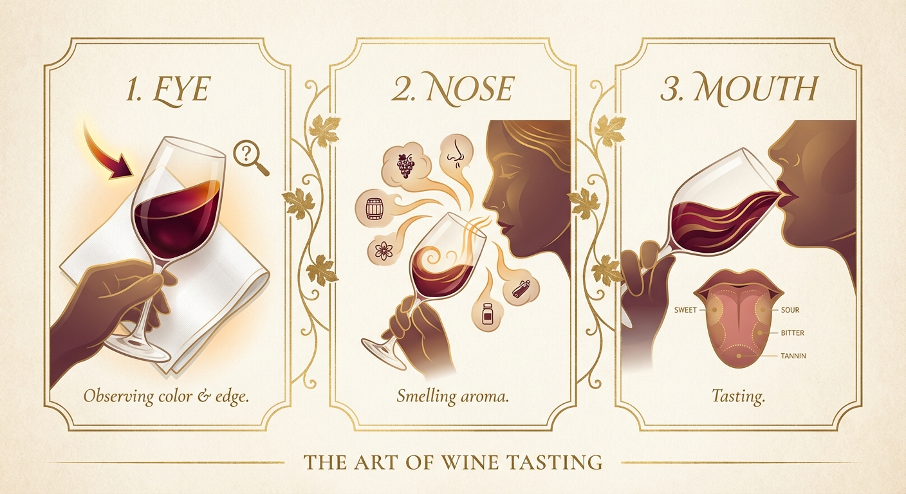

🍷 如何品嚐葡萄酒
透過視覺、嗅覺與味覺的感官之旅，探索葡萄酒的深奧世界

👀 步驟一：觀察色澤
觀察重點
在品嚐葡萄酒之前，先將酒杯傾斜約45度，在良好的光線下觀察酒液。
- 看顏色： 觀察酒杯中心到外緣的顏色變化，外緣通常會呈現出橘黃色或較淡的色調。
- 觀察邊緣： 接著注意酒液的最邊緣，會看到一圈比較大的透明部分（Watery Rim），這能透露出葡萄酒的年齡與狀態。
👃 步驟二：聞其香氣
香氣是葡萄酒最迷人的地方。輕輕搖晃酒杯，讓酒液與空氣接觸，釋放出更多層次的氣味。
🍇 年輕的葡萄酒
通常會有比較奔放、直接的鮮果味道（紅色漿果為主）。
常見香氣：桑葚、小紅莓、櫻桃等清新果香。
⏳ 成年的葡萄酒
如果有經過橡木桶陳釀，隨著時間推移，會發展出更多層次。
常見香氣：橡木桶的木質香氣會與葡萄酒原本的果香完美結合，轉化為更複雜的陳年酒香（Bouquet）。
👄 步驟三：味覺品嚐
啜飲一口酒，讓酒液在口腔中停留並接觸各個部位，感受其結構與風味。
年輕 vs. 老年份的口感差異
| 特徵 | 年輕的葡萄酒 | 年紀較大的葡萄酒 |
|---|---|---|
| 單寧 (Tannin) | 較重、較有澀感 | 較柔順、絲滑 |
| 酸度 (Acidity) | 較高、明亮 | 與甜味達到平衡 |
| 甜味 (Sweetness) | 果甜味較明顯 | 更加圓潤 |
| 酒精感 (Alcohol) | 較重、較明顯 | 較低、融合度佳 |
⚖️ 什麼是好酒？
一個好的葡萄酒通常會有一個平衡的感受。單寧、酸度、甜味與酒精感都會處於一個均衡的狀態，沒有任何一項過於突兀，喝起來和諧順口。
🌡️ 醒酒與適飲溫度
🍷 為什麼要醒酒？
葡萄酒是需要醒酒的，特別是年輕的紅酒。因為在年輕的時候，它的酒精感、單寧與酸度都比較明顯且分離。
經過醒酒（Decanting）讓酒液與空氣接觸氧化後，能讓所有的比重達到一個比較平衡的狀態，口感會變得更加柔和，香氣也會更開放。
香氣的演變：在不同的時間點，當它經過醒酒後，香氣就會開始改變，並產生一些比較特殊的味道，這也是品酒過程中有趣的探索。
🥂 白葡萄酒的侍酒
白葡萄酒通常都需要冰鎮後飲用。
雖然低溫會讓香氣分子較不活躍（香氣變少），但是冰鎮過後能讓白酒的甜度與酸度達到一個比較讓人可以接受、清爽平衡的狀態。
分享此品酒指南
準備好開始您的品酒之旅了嗎？
瀏覽七銘企業精選酒款，實踐您的品酒知識